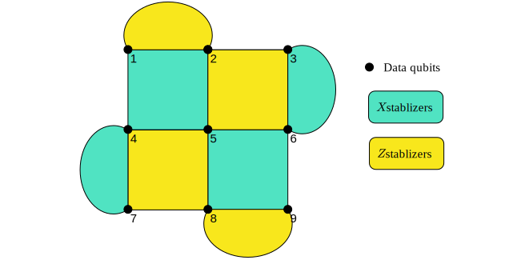
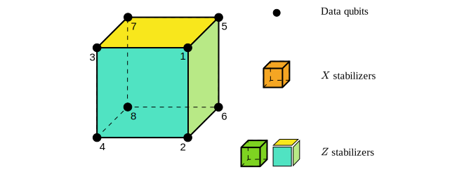

QEC Codes
We provide a number of quantum error correction codes.
using TensorQECToric Code
The Toric code is a 2D topological code[Kitaev]. We can define a Toric code instance by ToricCode.
tc = ToricCode(2, 3)BivariateBicycleCode{2}(2, 3, ((1, 0), (0, 0)), ((0, 1), (0, 0)))Here is a schematic diagram of 2*3 Toric code:
The Toric code has two types of stabilizers: X stabilizers and Z stabilizers. X stabilizers are plaquettes of the lattice, and Z stabilizers are vertices of the lattice. We can get the stabilizers of the toric code by
st = stabilizers(tc)10-element Vector{PauliString{12}}:
XIXIIIXXIIII
IXIXIIXXIIII
IIXIXIIIXXII
IIIXIXIIXXII
XIIIXIIIIIXX
ZZIIIIZIIIZI
ZZIIIIIZIIIZ
IIZZIIZIZIII
IIZZIIIZIZII
IIIIZZIIZIZINote the order of pauli strings is following the big-endian convention. For example, the Pauli string XYZ means $X_1Y_2Z_3$.
Surface Code
The surface code is a 2D topological code[Kitaev]. Similarly to Toric code, we can define a surface code instance by SurfaceCode and get the stabilizers of the surface code by stabilizers.
sc = SurfaceCode(3, 3)
st = stabilizers(sc)8-element Vector{PauliString{9}}:
XXIXXIIII
IIIIXXIXX
IIXIIXIII
IIIXIIXII
IZZIZZIII
IIIZZIZZI
ZZIIIIIII
IIIIIIIZZHere is a schematic diagram of 3*3 surface code: 
Shor Code
The [[9,1,3]] Shor code[Shor] functions by concatenating each qubit of a phase-flip with a bit-flip repetition code, allowing it to correct both types of errors at the same time. We can define a Shor code instance by ShorCode.
shor = ShorCode()
st = stabilizers(shor)8-element Vector{PauliString{9}}:
XXXXXXIII
XXXIIIXXX
ZZIIIIIII
ZIZIIIIII
IIIZZIIII
IIIZIZIII
IIIIIIZZI
IIIIIIZIZSteane Code
The [[7,1,3]] Steane is constructed using the classical binary [7,4,3] Hamming code[Steane]. We can define a Steane code instance by SteaneCode.

steane = SteaneCode()
st = stabilizers(steane)6-element Vector{PauliString{7}}:
XIXIXIX
IXXIIXX
IIIXXXX
ZIZIZIZ
IZZIIZZ
IIIZZZZ[[8,3,2]] Code
The [[8,3,2]] CSS code is the smallest non-trivial 3D color code[Menendez][Code832]. We can define a CSS [[8,3,2]] code instance by Code832.

code832 = Code832()
st = stabilizers(code832)5-element Vector{PauliString{8}}:
XXXXXXXX
ZZZZZZZZ
ZIZIZIZI
ZZZZIIII
ZZIIZZIIThis page was generated using Literate.jl.
- KitaevKitaev, A. Y. Fault-Tolerant Quantum Computation by Anyons. Annals of Physics 2003, 303 (1), 2–30. https://doi.org/10.1016/S0003-4916(02)00018-0.
- MenendezMenendez, D. H.; Ray, A.; Vasmer, M. Implementing Fault-Tolerant Non-Clifford Gates Using the [[8,3,2]] Color Code. arXiv September 15, 2023. http://arxiv.org/abs/2309.08663.
- Code832THE SMALLEST INTERESTING COLOUR CODE
- ShorShor, P. W. (1995). Scheme for reducing decoherence in quantum computer memory. Physical Review A, 52(4), R2493–R2496. https://doi.org/10.1103/PhysRevA.52.R2493
- SteaneSteane, A. (1997). Multiple-particle interference and quantum error correction. Proceedings of the Royal Society of London. Series A: Mathematical, Physical and Engineering Sciences, 452(1954), 2551–2577. https://doi.org/10.1098/rspa.1996.0136